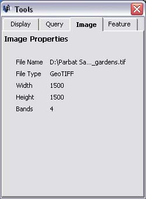

Image File Information
Viewing information about a loaded image file
Parbat 3D allows you to easily retrieve information about the image file currently loaded. To view file information,
follow these steps:
- An image must first be loaded. See loading an image
- If the Image Window is not already visible, click on the 'Window' menu followed by 'Image'.

- If the Tools Window is not already visible, click on the 'Window' menu followed by 'Tools'.
- Click on the 'Image' tab within the Tools Window.

Image properies include:
- File Name - Name and Path of loaded image file.
- File Type - Format of loaded image file.
- Width - Width in pixels of loaded image file.
- Height - Height in pixels of loaded image file.
- Bands - Number of bands in loaded image file (eg. Red, Green, Blue, Infra Red, etc.)